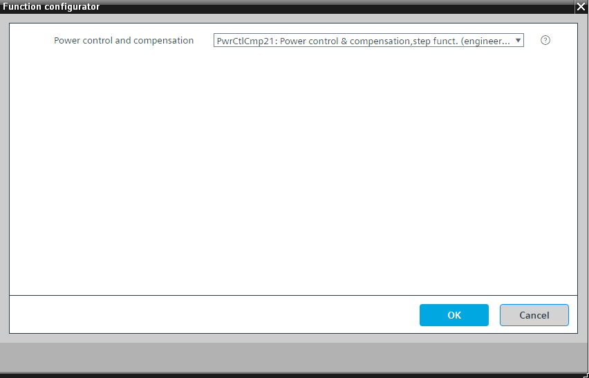

[PwrCtlCmp21] 功率控制和补偿，阶跃函数
Program block, name / node subtype: [PwrCtlCmp21] Power control and compensation, step function
Library hierarchy: Universal functions
Family: PwrCtlCmp
Configurator

功率控制和补偿接收来自“升压/down”的请求，以由于脉冲“升压”或“降压”而增加或减少功率。这会直接触发对配置文件表中下一行或上一行的更改。
然后，功率控制检查“配置文件表”中行的变化是否导致了当前产生的输出的期望增加或减少。功率控制接收热发生器当前产生的功率输入 [PwrCap] 的反馈，并将其与内部存储器 [PrPwrCap] 中的值进行比较。
如果未获得所需结果，功率控制会更改行，直到达到当前功率所需的增加或减少。
Use of internal memory
内部存储器被“功率控制和补偿”用来纠正与计划的增加或减少的偏差。
“升压”时内存增加 1 kW。同时，它切换到配置文件表中的下一行。接通的热发生器[PwrCap]的功率被发送回“功率控制和补偿”。如果功率高于内存中的值，则保留配置文件表中的当前行，并将 [PwrCap] 中的值写入内部内存 [PrPwrCap]。相反，如果功率仍然小于内存中的值，则切换到配置文件表中的下一行，直到功率大于内存中的值。
“降压”时内存减少 1 kW。同时，它切换到配置文件表中的上一行。接通的热发生器[PwrCap]的功率被发送回“功率控制和补偿”。如果功率低于内存中的值，则保留配置文件表中的当前行，并将 [PwrCap] 中的值写入内部内存 [PrPwrCap]。反之，如果功率仍高于内存中的值，则切换到轮廓表中的下一行，直到功率小于内存中的值。
Detailed workflow using the example for "Step up"
功率控制和补偿在输入 [StepUp] 上接收来自“Step up/down”的脉冲“Step up”。功率控制和补偿向配置文件表发送命令以移动到下一行。该阶段针对该行中定义的热发生器启动。
因此，功率控制接收热发生器产生的新的当前功率的输入 [PwrCap] 反馈。如果新报告的当前产生的功率值大于内存中的值，则它保留在该行上。只要热发生器没有故障，这通常是正确的。如果当前产生的新功率保持不变，则功率控制和补偿将更改到配置文件表中的下一行。重复该过程，直到报告的当前产生的功率大于存储器中的值。一旦出现这种情况，报告的当前产生的功率将再次存储并显示为输出上当前产生的功率 [PrPwrCap]。
配置文件表 SELP_8MS 可以通过其输出 [PrRowMax] 传输带有有效条目的最后一行。 “功率控制和补偿”在输入 [MaxPos] 处接收该值并确定允许进一步切换的行。
[PwrCap] 和 [PrPwrCap] 按周期进行比较，周期时间为 4 秒。
对于脉冲“升压”，内部程序逻辑中的 [PrPwrCap] 增加 1 kW。
由于 [PwrCap] 和 [PrPwrCap] 之间产生不平衡，逻辑需要更多功率。在 4 秒的循环时间内，它会发送“升压”脉冲，直到 [PwrCap] 大于 [PrPwrCap]。
系统再次达到平衡，并且 [PwrCap] 被写入内存作为 [PrPwrCap]。
Auxiliary functions
可以启用或禁用以下辅助功能：
- Request for target power: An impulse on input [SetTgtPwr] deploys the function to the power specified on input [TgtPwr]. The power on [TgtPwr] is stored and steps are initiated in the profile table until the value on [PwrCap] is greater than or equal to.
- Forced compensation: A pulse on input [TrgCmp] restores the original power on [PrPwrCap] in sequential steps, for example, due to a loss of a heat generator caused by a fault and if no [EnCmpPwrShrtg] was enabled.
- Automatic power compensation in the event of a power shortage [EnCmpPwrShrtg]: Power shortage is detected based on input [PwrCap] and balanced by sequential steps, e.g., due to a loss of a heat generator caused by a fault.
- Automatic power compensation in the event of a power excess [EnCmpPwrExcs]: Power gain is detected based on input [PwrCap] and balanced by sequential steps, e.g., due to manually switching on a heat generator.